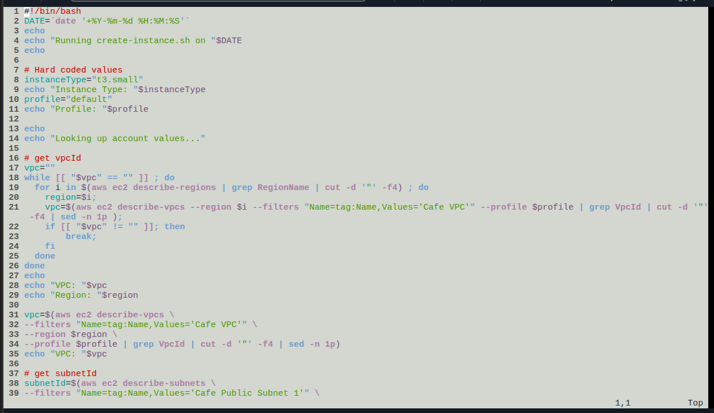
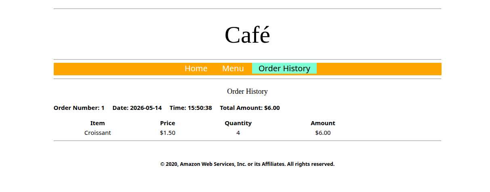

Provisioning model
EC2 launched via aws ec2 run-instances from a CLI host, with a
user-data file installing Apache, MariaDB and PHP at first boot.
Launched a LAMP-stack EC2 instance using a provided shell script that wraps several
aws ec2 CLI calls. The script intentionally ships with two defects.
The work was to read the script, run it, interpret the failure, and apply targeted
fixes until the Café web application responded on http://<public-ip>/cafe.
The lab provides a CLI host (already provisioned) and a shell script
create-lamp-instance-v2.sh that should provision a second EC2 instance
running Apache, MariaDB and PHP. Running the script fails. The job is to read it,
locate the failure points, fix them, and prove the Café application is reachable.
EC2 launched via aws ec2 run-instances from a CLI host, with a
user-data file installing Apache, MariaDB and PHP at first boot.
InvalidAMIID.NotFound. The AMI lookup logic in the script returns a
value that run-instances rejects in the target Region.
The instance boots, httpd serves on port 80 internally, but the
browser times out. The new Security Group does not allow inbound TCP/80.
The lab pre-creates a CLI Host instance. Connection is done through EC2 Instance Connect rather than PuTTY/SSH, so no key material has to be downloaded locally. From that shell the AWS CLI is configured against the lab account.
# From EC2 Instance Connect, on the CLI Host
aws configure
# AWS Access Key ID : <AccessKey from lab Details>
# AWS Secret Access Key : <SecretKey from lab Details>
# Default region name : <LabRegion>
# Default output format : jsonaws configure would surface as cross-region lookup failures later on, so
it is worth getting it right before running any provisioning script.
create-lamp-instance-v2.sh
Before running anything, the script was backed up and inspected. The structure below
is what an operator should know before debugging — the script is a wrapper around
several read-only aws ec2 describe-* calls feeding a single
run-instances call.
cd ~/sysops-activity-files/starters
cp create-lamp-instance-v2.sh create-lamp-instance.backup
view create-lamp-instance-v2.sh # read-only in vi; :set number to show line numbers| Lines | Role | Notes |
|---|---|---|
| 1 | Shebang | #!/bin/bash |
| 7–11 | Hard-coded values | Instance type fixed to t3.small; AWS profile fixed to default. |
| 16–29 | VPC discovery loop | Iterates over aws ec2 describe-regions and, per region, calls
describe-vpcs --filters "Name=tag:Name,Values='Cafe VPC'" until the
Cafe VPC is found. Captures both the VPC ID and its Region, then breaks. |
| 31–55 | Lookups | Resolves subnet ID (Cafe Public Subnet 1), key pair, and AMI ID
using individual describe-* calls. This is where Issue #1 is
seeded. |
| 57–122 | Idempotency cleanup | If a previous cafeserver instance or a SG containing
cafeSG already exists, the script offers to delete them so the
rerun starts clean. |
| 124–152 | Security Group creation | Creates a fresh SG. Per the guide it should open ports 22 and 80 inbound — but in practice the rule for TCP/80 is not effective at first boot, which is what Issue #2 exposes. |
| 154–168 | run-instances |
Calls aws ec2 run-instances with the values gathered above and
a user-data reference. The full response is captured in
$instanceDetails. |
| 179–188 | Wait for public IP | Parses the instance ID and loops every 10 s on describe-instances
until a public IPv4 is associated, then prints it. |

view create-lamp-instance-v2.sh — top of the script: shebang,
hard-coded instanceType="t3.small" and profile="default",
and the VPC discovery loop that runs describe-regions /
describe-vpcs filtered by tag Name=Cafe VPC.
create-lamp-instance-userdata-v2.txt was inspected
with cat only — it installs Apache, MariaDB and PHP, drops the Café web
app under the document root, and runs the database init scripts on first boot.
The script was run with ./create-lamp-instance-v2.sh. Two distinct
failures surfaced, one before the instance existed and one after.
InvalidAMIID.NotFound on run-instancesThe script aborts during run-instances with:
An error occurred (InvalidAMIID.NotFound) when calling the RunInstances
operation: The image id '[ami-xxxxxxxxxx]' does not exist.
The AMI lookup block (lines 31–55) returns an image ID, but the value passed to
run-instances is not valid in the Region selected by the VPC
discovery loop. AMI IDs are Region-scoped; the lookup and the
launch must use the same Region.
The AMI describe-images call (or the parsed result) does not
propagate the Region resolved earlier by the VPC loop, so the AMI ID either
comes from a different Region or matches no available image in the launch
Region.
Align the AMI lookup with the Region captured in the VPC loop (passing
--region $region) and confirm the resolved ID with
aws ec2 describe-images --region $region --image-ids $amiId before
rerunning the script. Answer Y at the cleanup prompts on rerun.
run-instances
then succeeded and the loop on lines 179–188 reported a public IPv4 for the new
instance.
Browser request to http://<public-ip> times out. EC2
Instance Connect succeeds, the instance is in running state, and
systemctl status httpd reports the service is up.
From the CLI host, scanned the new instance with nmap -Pn
<public-ip>. Port 22 shows as open; port 80 is filtered /
not reachable. The service is up internally but the perimeter rejects
the traffic before it arrives.
The newly created Security Group does not have an effective inbound rule
allowing TCP/80 from 0.0.0.0/0. The OS is fine, the routing is fine,
the boundary blocks the request.
Add the missing inbound rule to the SG attached to the instance: TCP,
port 80, source 0.0.0.0/0. Reload the browser — no instance
restart needed; SG changes apply immediately.
sudo yum install -y nmap
nmap -Pn <public-ip>
# Expected after fix: 22/tcp open ssh, 80/tcp open httprun-instances and to the script's own echo output.
Two complementary checks: read the cloud-init log to confirm the user-data installer finished cleanly, then exercise the Café application end-to-end through the browser.
Connected to the new instance with EC2 Instance Connect and tailed the log that records user-data execution:
sudo tail -f /var/log/cloud-init-output.log
# Look for the MariaDB / PHP install lines and the
# "Create Database script completed" message.
# Ctrl-C to exit tail.
# Full file:
sudo cat /var/log/cloud-init-output.logNo error lines appeared around the LAMP packages or the database init script, so the user-data path was not the cause of the earlier failures — it confirmed the issue was strictly at the SG boundary.
Browsed to http://<public-ip>/cafe, used the
Menu page to submit an order, then opened
Order History to confirm the order was persisted in MariaDB.

/cafe — order #1, 4 × Croissant @ $1.50
= $6.00. Renders correctly with the Home / Menu / Order History nav, which
proves Apache is serving, PHP is executing, and MariaDB stored and returned
the row.
InvalidAMIID.NotFound error, the nmap output before
and after the SG fix, the cloud-init-output.log tail, and the order
submission form) were performed but not screenshotted, and are documented in prose
only.
--region to every dependent
describe-* call.nmap -Pn <public-ip> from a peer inside the VPC is a
cheap, fast way to separate "service is down" from "service is up but
filtered"./var/log/cloud-init-output.log is the canonical place to debug
user-data scripts on Amazon Linux. If it ends cleanly, the failure is past
the OS.
The lab was less about typing AWS CLI commands and more about reading a
non-trivial bash script that orchestrates them. The two seeded defects map
cleanly onto two layers: a control-plane failure that the API
surfaces immediately, and a data-plane failure that only an
external probe (browser, nmap) can reveal.
The mental model worth keeping: when an EC2-hosted service does not respond, start from the closest layer to the application (OS service, then user-data log), then move outward (Security Group, NACL, route table, IGW). Skipping straight to "it's the network" wastes time when the service was actually dead — and the reverse mistake wastes time when the service is fine but the perimeter is closed.